クラフトと見た目
このページについて
作業台で作れるようになったものと、見た目が変わったものをまとめました。レシピの図は、左の格子が作業台の 3×3 です。「形は自由」と書いたレシピは、格子のどこに置いてもかまいません。
緑の染料
 小麦の種、背の低い草、どの木の葉からでも、かまどを使わずに作業台で緑の染料が 1 個作れます。3 つのレシピは、レシピブックでは 1 つにまとまっています。
小麦の種、背の低い草、どの木の葉からでも、かまどを使わずに作業台で緑の染料が 1 個作れます。3 つのレシピは、レシピブックでは 1 つにまとまっています。
樹皮を剥いだ原木
どの原木・木・幹・菌糸と竹のブロックも、作業台に 1 個置くだけで、斧を使わずに樹皮を剥いだものになります。原木 1 個は板材のレシピにも合うので、作業台では両方から選べます（レシピの出力選択）。ただし歪んだ幹と歪んだ菌糸は、選ぶまでは樹皮を剥いだものになります。
樹皮を剥いだ原木のレシピ（25 件）
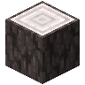
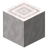
形は自由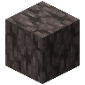
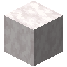
形は自由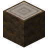
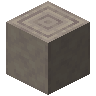
形は自由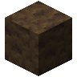
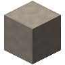
形は自由エンチャントの本
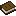
- 同じ数のラピスラズリで、そのレベルのあるエンチャントすべてに合うので、レシピの出力選択で本を選ぶまでは何もできません。クラフターも、画面で本を選ぶまでは何もしません。
- 選んだ本は、材料が合っている間ずっと続くので、材料がなくなるまで同じ本を作り続けます。
- インベントリの 2×2 には本とラピスラズリ 3 個までしか置けないので、レベル IV と V の本には作業台か携帯作業台が要ります。
- 本は、ゲームがエンチャントを並べている順（防具・武器・道具・弓・釣り竿・トライデント・クロスボウ・メイスの順で、最後に修繕）に並びます。
- このレシピはレシピブックには出ませんが、ラピスラズリを手に入れると解放されるので、レシピの制限があるワールドでも作れます。JEI には一覧が出ます。
- Minecraft 26.3 のエンチャントだけです。ほかの MOD やデータパックが足したエンチャントの本は作れません。
作れるエンチャントの本（41 種類）
| エンチャント | レベル | 2×2 で作れる |
|---|---|---|
| ダメージ軽減 | I〜IV | 〜III |
| 火炎耐性 | I〜IV | 〜III |
| 落下耐性 | I〜IV | 〜III |
| 爆発耐性 | I〜IV | 〜III |
| 飛び道具耐性 | I〜IV | 〜III |
| 水中呼吸 | I〜III | すべて |
| 水中採掘 | I | すべて |
| 棘の鎧 | I〜III | すべて |
| 水中歩行 | I〜III | すべて |
| 氷渡り | I〜II | すべて |
| ソウルスピード | I〜III | すべて |
| スニーク速度上昇 | I〜III | すべて |
| ダメージ増加 | I〜V | 〜III |
| アンデッド特効 | I〜V | 〜III |
| 虫特効 | I〜V | 〜III |
| ノックバック | I〜II | すべて |
| 火属性 | I〜II | すべて |
| ドロップ増加 | I〜III | すべて |
| 範囲ダメージ増加 | I〜III | すべて |
| 効率強化 | I〜V | 〜III |
| シルクタッチ | I | すべて |
| 耐久力 | I〜III | すべて |
| 幸運 | I〜III | すべて |
| 射撃ダメージ増加 | I〜V | 〜III |
| パンチ | I〜II | すべて |
| フレイム | I | すべて |
| 無限 | I | すべて |
| 宝釣り | I〜III | すべて |
| 入れ食い | I〜III | すべて |
| 忠誠 | I〜III | すべて |
| 水生特効 | I〜V | 〜III |
| 激流 | I〜III | すべて |
| 召雷 | I | すべて |
| 拡散 | I | すべて |
| 高速装填 | I〜III | すべて |
| 貫通 | I〜IV | 〜III |
| 重撃 | I〜V | 〜III |
| 防具貫通 | I〜IV | 〜III |
| ウィンドバースト | I〜III | すべて |
| 突進 | I〜III | すべて |
| 修繕 | I | すべて |
木箱・かご・ボックス
 木箱 は、木のハーフブロック 8 個で作る 27 枠の入れ物です。
木箱 は、木のハーフブロック 8 個で作る 27 枠の入れ物です。
 かご と
かご と  竹のかご は、キャンバスと棒、または竹で作る 27 枠の入れ物です。
竹のかご は、キャンバスと棒、または竹で作る 27 枠の入れ物です。
- かごは置いたときに向こう側を向いて口を開け、中に落ちたアイテムと、口の前のブロックに落ちたアイテムを 8 ティックに 1 個ずつ拾います。
- レッドストーンの信号が届いている間は止まります。信号が届く場所に置いたかごは、ホッパーと同じく止まったままです。
- ホッパーで出し入れでき、コンパレーターで中身を読めます。ほかの MOD のパイプも、かごと木箱に届きます。
- まな板と斧で、かごを分解できます。
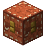
- 開くとふたが持ち上がり、上にふたの開く余地がないと開けません。
- 壊しても中身ごとアイテムになり、そのまま持ち運べます。
- ボックスとシュルカーボックスは、ボックスの中にもシュルカーボックスやバンドルの中にも入りません。ホッパーでも入りません。
- 染料と合わせると、中身を残したまま 16 色のボックスになります。水の入った大釜で使うと、色が落ちて元のボックスに戻ります。
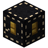
（または 青色のボックス、ボックス、茶色のボックス、青緑色のボックス、灰色のボックス、緑色のボックス、空色のボックス、薄灰色のボックス、黄緑色のボックス、赤紫色のボックス、橙色のボックス、桃色のボックス、紫色のボックス、赤色のボックス、白色のボックス、黄色のボックス）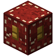
形は自由- シュルカーボックスはバニラの名前のまま、シュルカーの殻で作ります。染料では色を変えられなくなりました。色の付いたシュルカーボックスは、大釜で今までどおり色を落とせます。
作物の木箱は 28 種類あり、ニンジン・ジャガイモ・ビートルート・キャベツ・トマト・タマネギ・トウモロコシ・キュウリ・ナス・白ナス・アボカド・ピクルスと、16 種類の果物（リンゴ・ナシ・サンザシ・柿・キウイ・モモ・イチジク・オレンジ・ヤマモモ・ライチ・マンゴー・マンゴスチン・ブルーベリー・クランベリー・レモン・パイナップル）を 9 個ずつまとめます。米袋は米、稲の俵は稲穂、藁の俵は藁を 9 個まとめます。どれも 9 個に戻せます。俵はわらブロックと同じく落下のダメージを減らし、上に焚き火の合図の煙を上げます。藁の俵は燃料に、稲の俵はコンポスターに使えます。
作物の木箱と俵のレシピ（62 件）
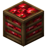
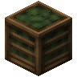
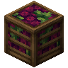
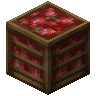
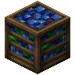
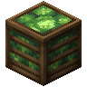
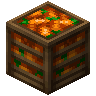
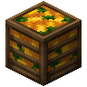
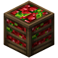
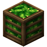
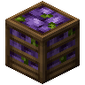
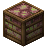
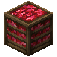
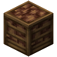
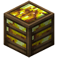
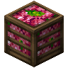
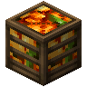
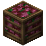
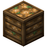
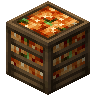
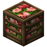
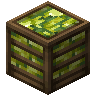
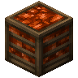
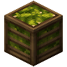
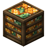
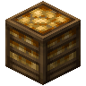
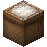
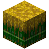
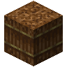
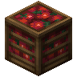
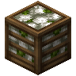
飾り
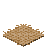
キャンバスのカーペット: キャンバス 1 枚から 2 枚作れる、ブロックの 16 分の 1 の高さの敷物です。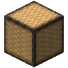
畳ブロック: 置いた先の畳ブロックと組んで、2 つにまたがる 1 枚の畳になります。スニークしながら置くと組みません。- 畳 はベッドのように 2 マスにまたがって敷き、半畳 は 1 マスに敷きます。
- 敷物と畳は下にブロックが要り、下のブロックがなくなると壊れます。畳はピストンで押すと壊れます。
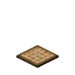
コースター には、どんなアイテムでも 1 個ずつ 4 つまで載せられ、2 つ以上でトレーになります。素手で右クリックすると、最後に載せたものから取れます。しゃがんで素手で右クリックすると、コースターだけを取って物を置いたままにできます。
 キャンバス は藁 4 つで作ります。敷物・コースター・かごのほか、本・絵画・足場の材料にもなります。
キャンバス は藁 4 つで作ります。敷物・コースター・かごのほか、本・絵画・足場の材料にもなります。
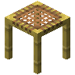
6ポーションとエンチャントの本の絵
ポーション・スプラッシュポーション・残留ポーションは、色違いの同じ瓶ではなく、種類ごとに違う絵になります。エンチャントが 1 つだけの本も、エンチャントとレベルごとに違う絵になるので、ダメージ増加 IV と V も見分けられます。
- 絵は xalixilax さんのリソースパック「xali's Potions」と「xali's Enchanted Books」のもので、MOD に組み込んでいます。突進（Lunge）の 3 枚は、PoyoSecretBase で同じ作り方で描きました。
- エンチャントが 2 つ以上の本、最大レベルを超えた本、効果を付け足したポーション、効能付きの矢はバニラの絵のままです。
- リソースパックで、どの絵も置き換えられます。
ポーション（左から通常・スプラッシュ・残留）
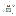
透明化のポーション跳躍のポーション耐火のポーション（延長）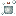
透明化のポーション（延長）跳躍のポーション（延長）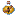
暗視のポーション（延長）毒のポーション（延長）再生のポーション（延長）低速落下のポーション（延長）鈍化のポーション（延長）力のポーション（延長）俊敏のポーション（延長）タートルマスターのポーション（延長）水中呼吸のポーション（延長）弱化のポーション（延長）幸運のポーションありふれたポーション暗視のポーション滲出のポーション毒のポーション再生のポーション低速落下のポーション鈍化のポーション力のポーション負傷のポーション II治癒のポーション II跳躍のポーション II毒のポーション II再生のポーション II鈍化のポーション IIエンチャントの本（左からレベル I、II…）
盾
剣のある 7 つの素材すべてに盾があります。防ぎ方はどれもバニラの盾と同じで、構えて 0.25 秒たつと正面からの攻撃を全部防ぎます。違うのは耐久と、修理に使う素材だけです。
- 木の盾: 耐久 112。板材で直る
- 石の盾: 耐久 170。丸石などの石の道具の素材で直る
- 銅の盾: 耐久 246。銅インゴットで直る
- 鉄の盾: 耐久 336。鉄インゴットで直る
- 金の盾: 耐久 157。金インゴットで直る。ピグリンが欲しがる
- ダイヤモンドの盾: 耐久 739。ダイヤモンドで直る
- ネザライトの盾: 耐久 829。ネザライトインゴットで直る。火や溶岩で燃えない
バニラの盾の形の真ん中を素材に替えて作ります。木の盾は板材 7 枚だけで作れます。
ネザライトの盾は、ダイヤモンドの盾を鍛冶台でアップグレードして作ります。旗の模様やエンチャントはそのまま残ります。
- どの盾にも、バニラの盾と同じく作業台で旗を合わせて模様を付けられます。耐久力と修繕は金床で本から付けます。
- 鉄の盾はバニラの盾の代わりです。見た目はバニラの盾と同じで、バニラの盾のレシピはなくなり、防具鍛冶の村人が売る盾、試練の間の宝物庫から出る盾、進捗「今日はやめておきます」のアイコンも鉄の盾になります。
- すでに持っているバニラの盾は、そのままバニラの盾として使えます。
- 斧で殴られて使えなくなるのは、そのとき構えていた種類の盾だけです。持ち替えたほかの種類の盾は、すぐに構えられます。